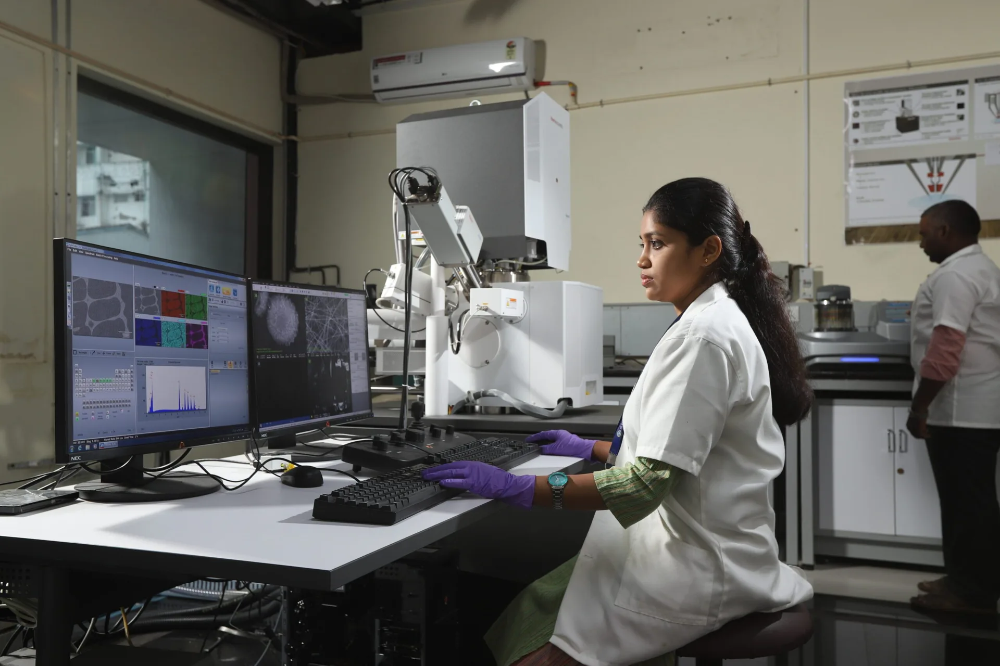
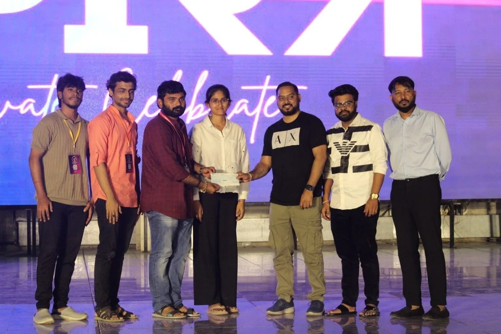

Research
SRMIST's research centres work together on applied and cross-disciplinary projects, from patentable ideas to prototypes and incubated companies.
Research at SRMIST.
Faculty and students publish and patent across disciplines.
- Publications
- 58,000+
- Patents
- 1,100+
Where the work happens.
A large multidisciplinary campus lets researchers from different fields work on the same questions.
Research on the official site
Central Research Laboratories and Facilities
Shared facilities that bring scholars and students from different study areas together to work on common problems.
Interdisciplinary Institute of Indian System of Medicine
Set up in 2008 to promote research in the traditional systems of Indian medicine, including Siddha, Ayurveda and Unani.
REACH
The Center for Research in Environment, Sustainability Advocacy and Climate Change, started at the Kattankulathur campus to build a university-wide environment of research excellence.
SRMIST also organises conferences, seminars and workshops, and funds socially relevant research projects taken up by students.
From research to start-up.
The SRMIST Startup Ecosystem offers incubation centres and a mentorship network that connects founders with industry experts.
Startup ecosystem
Policies and ethics.
The university publishes the rules that govern research on campus.
Policy on Promotion of Research
How the university supports researchers.
Policy on Chemical and Hazardous Waste disposal
How laboratories handle hazardous material.
Institutional Code of Ethics for Research
The standards researchers are held to.
Contact the Dean, Research.
Write to the Dean for research collaborations and enquiries.
- Dean, Research
- Dr. Bernaurdshaw Neppolian